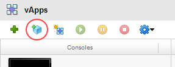
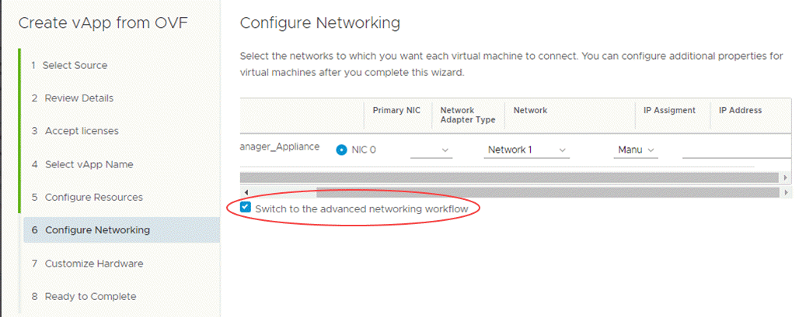

How to install and configure OpenVPN
Overview
Secure remote access to the cloud is essential to cloud adoption and use. UKCloud for VMware comes with a dedicated edge gateway, providing a simple and easy-to-use solution that supports IPsec site-to-site virtual private networks (VPNs) and a limited number of remote access client VPNs designed for occasional use.
If you require a more flexible or scalable solution, you can deploy your own choice of virtual appliances (either open-source solutions, such as OpenVPN or commercial solutions from a supplier, such as Cisco, F5 or Palo Alto), instead of using the limited VPN service provided with the default edge gateway.
This article details the steps required to obtain, deploy and configure an OpenVPN virtual appliance to obtain remote access to your virtual data centres (VDCs) running on the UKCloud platform.
Note
OpenVPN is a licensed product. Without a licence key, you are limited to only two concurrent VPN connections. If you require additional concurrent connections, you'll need to obtain and install a licence key.
Preparing your virtual data centre
Create a new VDC network
To secure your environment, we recommend that you deploy the OpenVPN appliance into a new, routed VDC network. Ideally, no other virtual machines (VMs) should connect to this network. This enables you to tightly control access from VPN clients to the VMs in your environment using firewall rules on the edge gateway. However, if you're approaching the network interface limit of your edge gateway, it's possible to deploy the OpenVPN appliance into an existing network.
More information! How to create a routed VDC network
Configuring the edge gateway
After you've created the network, you'll need to configure the edge gateway to control access to the VMs in your environment by creating:
A Source NAT rule to allow the OpenVPN appliance outbound access to the internet.
A Destination NAT rule to allow inbound access from the internet.
A firewall rule to allow inbound access from the internet on port
443.One or more firewall rules to allow users connected to the OpenVPN appliance to access VMs on other networks for administration purposes. Note that all VPN users will be NATed to the IP address of the OpenVPN appliance.
One or more firewall rules to allow access from trusted environments to the OpenVPN appliance on the admin port (
943by default, but can be changed).
More information! How to create NAT rules and How to create firewall rules.
Obtaining the latest OpenVPN appliance
To ensure you're running the latest release of OpenVPN, we recommend that you download the latest version of the appliance directly from the OpenVPN website:
Go to the following location to download the latest OVA file:
In vCloud Director, select the Catalogs tab.
In the left navigation panel, select My Organization's Catalogs.
Open the catalog you'd like to add the appliance to, or create a new catalog.
Click the Upload button and upload the OVA file to the catalog.
Deploying the OpenVPN appliance
The steps for deploying the OpenVPN appliance depend on the version of vCloud Director available in your environment:
vCloud Director 8.20
To deploy the OpenVPN appliance:
In vCloud Director, select the My Cloud tab.

In the left navigation panel, select vApps.
In the toolbar, click the Add vApp from OVF icon.

In the Add vApp from OVF wizard, on the Select Source page, select Local file and browse to the OVA file that you downloaded, then click Next.
The appliance will be deployed as a single VM inside the vApp.
On the Review Details page, confirm the details of the OVA file and then click Next
On the Select Name and Location page, enter a meaningful Name and Description for your vApp
From the Virtual Datacenter list, select the VDC in which you want to create the vApp and then click Next.
On the Configure Resources page, select your desired storage policy and then click Next.
On the Configure Networking page, provide a name for the VM.
Select the Switch to the advanced networking workflow check box.

This enables you to select your desired network and change the IP assignment method. Typically, we recommend that you deploy the VPN appliance to its own network segment (as described in Preparing your virtual data centre, and use the Static IP Pool method of IP assignment.
Continue through the wizard and click Finish. There are no further changes necessary unless you want to customise the vApp further to suit your environment.
When the vApp has deployed and is powered on, you'll need to reset (reboot) the VM before logging in for the first time to force the networking changes made during VMWare's guest customisations to take effect before you start configuring OpenVPN.
vCloud Director 9.1
To deploy the OpenVPN appliance:
In the vCloud Director Virtual Datacenters dashboard, select the VDC in which you want to depoly the OpenVPN appliance.
In the left navigation panel, select vApps.

Click Add vApp from OVF.

Select the OVA that you downloaded then click Next.
Review the details of the OVA to confirm that it's the right images then click Next.
The appliance will be deployed as a single VM inside a vApp. Provide a name for the vApp then click Next.
Provide a valid NetBIOS host name and your desired storage policy then click Next.
Configure the network by selecting Switch to advanced networking workflow.

Select the network adapter type, network and IP pool assignment (Manual) then click Next.
Select the number of vCPUs, sockets and memory this appliance will have then click Next.
Review the details then click Finish to deploy the vApp and appliance.
When the vApp has deployed and is powered on, you'll need to reset (reboot) the VM before logging in for the first time to force the networking changes made during VMWare's guest customisations to take effect before you start configuring OpenVPN.
Performing initial configuration
To perform initial configuration:
In vCloud Director, open the console for your OpenVPN VM.
Log in to the VM as the root user.
Tip
To obtain the root password:
- In vCloud Director 8.20, right-click the VM, select Properties, click the Guest OS Customization tab and make a note of the password.
- In vCloud Director 9.1, in the card for the VM, click Details then select Guest OS Customization and make a note of the password.
You'll be prompted to answer a series of questions:
Licence agreement: --- Enter
yesto accept.Will this be the primary Access Server node? --- Enter
yes.Please specify the network interface and IP address to be used by the Admin Web UI -- If the guest customisations were applied correctly, this should default to
eth0, which should be configured with an IP address on the network you selected during deployment.Please specify the port number for the Admin Web UI --- Enter your desired port number, or accept the default of
943. A separate port is not strictly needed for administration but is recommended.Please specify the TCP port number for the OpenVPN Daemon --- We recommend that you use the default of
443where possible as the use of a non-standard port may cause problems when connecting from corporate networks.Should client traffic be routed by default through VPN? --- Entering
yeswill prevent your client device from accessing any other networks (for example, your corporate network) while the VPN is connected. For ease of use, we suggest you answernoto this question.Should client DNS traffic be routed by default through the VPN? --- If you answered
yesto the previous question, all traffic will be routed through the VPN anyway, so your answer here will not matter. If you answerednoto the previous question, you'll probably want to answernoto this question so that your DNS queries are answered by the usual servers.Use local authentication via internal DB? --- Enter
yesunless you want to authenticate users from an existing directory service (Active Directory/LDAP).Should private subnets be accessible to clients by default? --- Answer
yesto enable access to your cloud networks via the VPN.Do you wish to login to the Admin UI as "openvpn"? --- Answer
yesto create a local user account namedopenvpn. If you answerno, you'll need to set up a different user name and password.Please specify your OpenVPN-AS license key --- If you've purchased a licence, enter the licence key, otherwise leave this blank.
When you've completed the setup wizard, you'll need to create user accounts and passwords on the local operating system (unless you configured an LDAP directory).
If you opted to use the default
openvpnaccount, you'll need to configure its password:#passwd openvpnPress ^D to log off the console, but before you do so, there are some additional system configurations, detailed in the following sections, that you might want to perform while you're connected to the console.
Check the DNS resolver configuration is in place
During our tests, the DNS resolver configuration was not added by the VMware customisations.
Enter the following command:
# pico /etc/network/interfacesUse the arrow keys to scroll down. Below the line specifying the default gateway, add the following:
dns-nameservers 8.8.8.8Press ^O to save the file, then ^X to exit the text editor.
Restart the networking service for the change to take effect:
# service networking restart
Configure the keyboard
The default configuration is for a US keyboard. To reconfigure for UK:
Enter the following command:
# dpkg-reconfigure keyboard-configurationStep through the wizard. There's no need to restart anything when you're finished.
Apply updates
It's a good idea to apply the latest upgrades to the system.
Enter the following command:
# apt-get update && apt-get upgradeYou'll be prompted to approve the installation of any updates.
Install NTP
Installing NTP is good practice anyway, but is required if you intend to use two-factor authentication via Google Authenticator.
Enter the following command:
# apt-get install ntpWhen the installation is complete, update the configuration file to point to UKCloud's NTP servers.
# pico /etc/ntp.configUse the arrow keys to scroll down until you reach the lines beginning with
server. Change the first two lines to reflect the UKCloud servers, and comment out the remaining two lines.Contact UKCloud Support for the UKCloud server IP addresses.
Configuring administration options
To configure administration options:
Log on to the admin interface at:
https://<ip_address>/adminTo set the hostname, under Configuration, select Server Network Settings and then set the Hostname or IP Address to either a public IP address or a fully qualified domain name (FQDN) that your client will be able to resolve.
Save the settings on this page.
Under Configuration, select VPN settings and, in the Routing section, add any additional subnets that your VPN users should have access to. These will usually be the IP subnets configured on all of your VDC networks.
This is the minimum configuration required to be able to establish a VPN connection.
If you want to create new user accounts, under User Management, select User Permissions.
You can configure the password for each account by clicking the Show link in the More Settings column.
Note
Be sure to use complex passwords.
Logging in and connecting
You can download the VPN client software and connection profiles directly from the appliance by browsing to the following location and logging in with a valid user name and password:
https://<ip_address>/
The downloaded client software and profile includes the client certificate that is required for authentication.
When you've installed the client software or profile, you can initiate connections directly from the client.
Securing the appliance
We strongly recommend that you further secure the appliance by making the changes suggested in the following sections.
Change all default passwords
If you've not already done so, change the root password to something more secure.
Log in to the OpenVPN VM console as the root user.
Enter the following command:
# passwd
Lock down unused ports with iptables
The OpenVPN configuration utility adds the required ALLOW entries to iptables automatically. To deny all other traffic, enter the following command:
# iptables -A INPUT -j DROP
Enable two-factor authentication via Google Authenticator
You can enable two-factor authentication via the OpenVPN administration interface.
Log on to the administration interface with the default account at:
https://<ip_address>/adminUnder Configuration, select Client Settings then click the checkbox to enable Google Authenticator support.
Note
Users will need to enter or scan the Google Authenticator secret by logging into the client portal (
http://<ip_address>/). When they've configured the secret, they should click the I scanned the QR code button to enforce two-factor authentication.
Lock down the Admin Web UI and Client Web UI
By default, both Admin and Client UIs are accessible over port 443. This can pose a security risk if you've opened port 443 to the internet to allow users to connect from anywhere. Besides the obvious risk of unauthorised access to the administration interface, should an attacker gain access to the client interface, they'll be able to download the client
certificates necessary to establish a VPN connection.
You can limit the administration and client interfaces so that they are accessible only via the administration port number (943 by default). This enables you to restrict access to this port to a trusted IP address or network, while allowing VPN access on port 443 from anywhere.
Your users will need to log in initially from the trusted network to install the client software, client certificate and configure Google Authenticator, before being able to establish VPN access.
To lock down the administration and client interfaces:
Log on to the administration interface with the default account at:
https://<ip_address>/adminUnder Configuration, select Server Network Settings.
Under Service Forwarding in the VPN Server section, clear the check boxes for Admin Web Server and Client Web Server.
Disable root SSH login
If connecting via SSH, it's best practice to connect with a non-privileged account, then sudo to root if needed. This prevents an attacker from brute-forcing the root password.
Enter the following command:
# pico /etc/ssh/sshd\_configUse the arrow keys to scroll down the file, and change the
PermitRootLogintono.
Disable the default account
During the initial setup, you created an user name and password to log in to the administration interface. This account, with the name openvpn, is configured to be always active, disregarding its status in the User Permissions area. In addition, if you configured two-factor authentication via Google Authenticator, this is not enforced for the default account.
To disable the default account:
Enter the following command:
# pico /usr/local/openvpn_as/etc/as.confUse the arrow keys to scroll down the file until you see entries starting with
boot_pam_users.Comment out the entry for the user name you chose for the default account. Usually this is the
boot_pam_users.0=entry.Restart the OpenVPN service for the change to take effect:
# service restart openvpnas
More help
If you have any issues regarding the updating or support of Microsoft Server, contact the UKCloud support team by raising a Service Request.
Feedback
If you have any comments on this document or any other aspect of your UKCloud experience, send them to products@ukcloud.com.